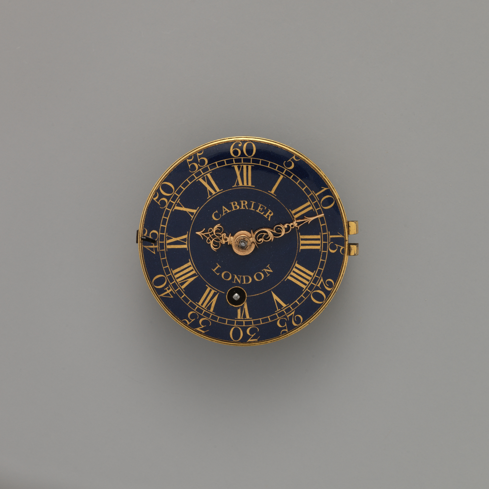
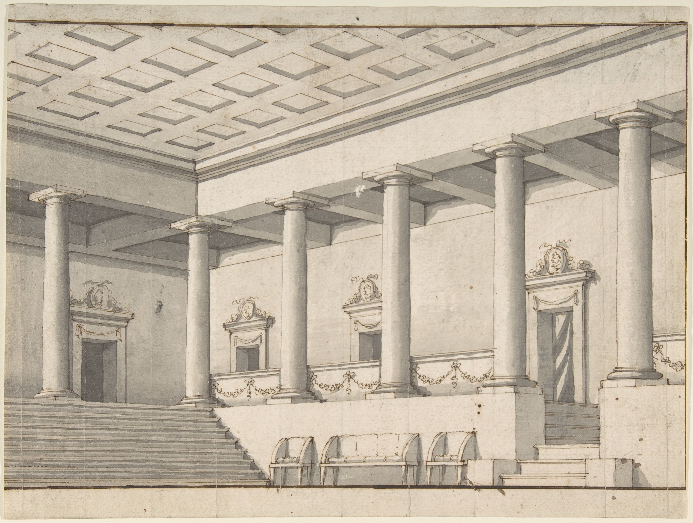
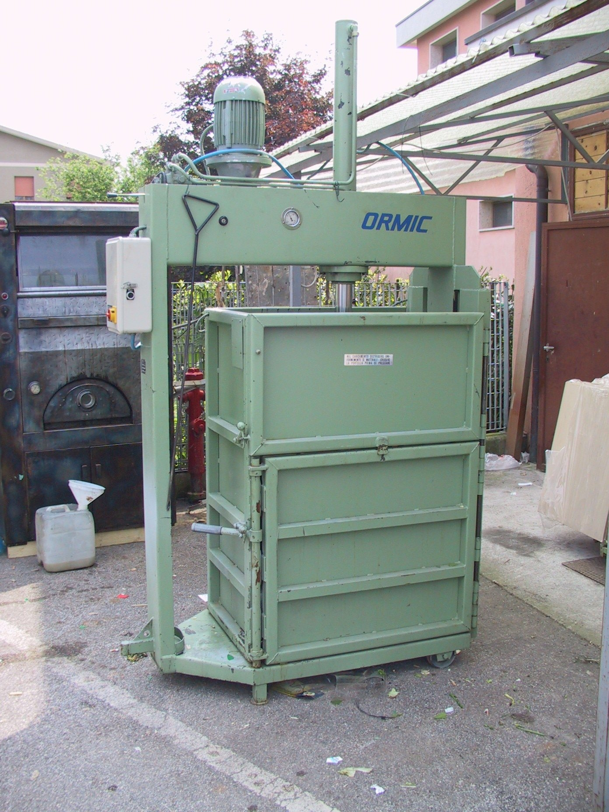

production archetypes
Standalone responsive showcases
Independent production landing pages adhering to The Floor invariants.

01 / swiss editorial
Aura Chronometry
High-contrast typographic platform. Calibre 4100 escapement configurator, 12-column grid, crimson signal.

02 / tactical dark
Krypton Telemetry
OLED charcoal base (#0B0D0F). Interactive live kernel stream, monospace data density, zero AI glow.

03 / quiet luxury
Maison Verre
Warm cream foundation (#FDFBF7), Cormorant serif majesty, tactile spatial palette selector, amber accent.

04 / industrial brutalist
Forge Dynamics
Rigid 2px solid black architectural framing, mechanical Space Mono, tactile hydraulic load simulator.

05 / cyber blueprint
Axiom Blueprint
Midnight cyber navy (#080E18), interactive SVG node topology, cyan status feedback for deep tech systems.

06 / wabi-sabi paper
Kami Atelier
Warm rice-paper canvas (#F4EFEA), Shippori Mincho serif, vertical Japanese annotation, handcrafted restraint.